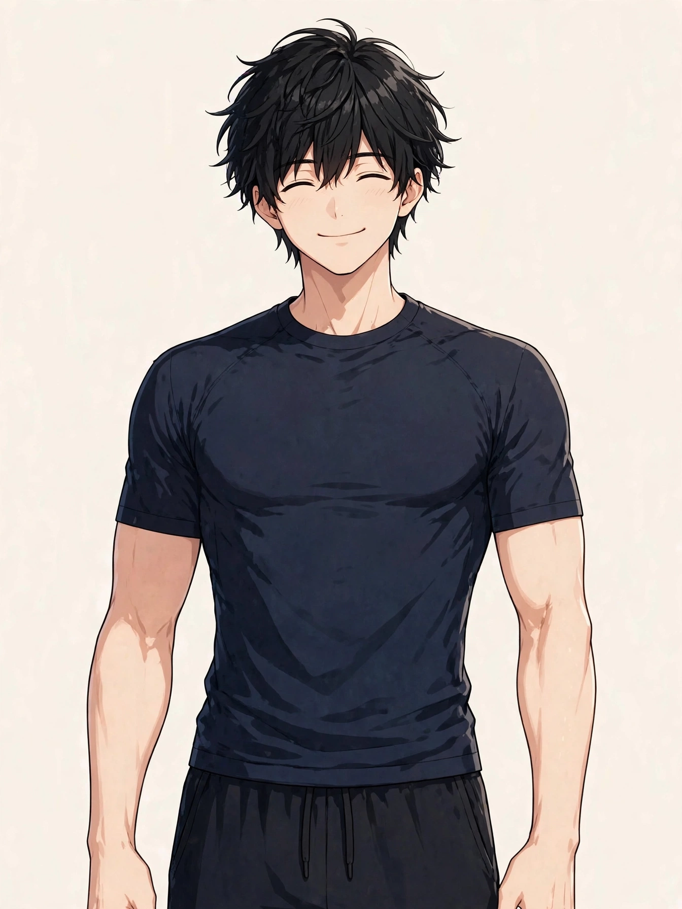
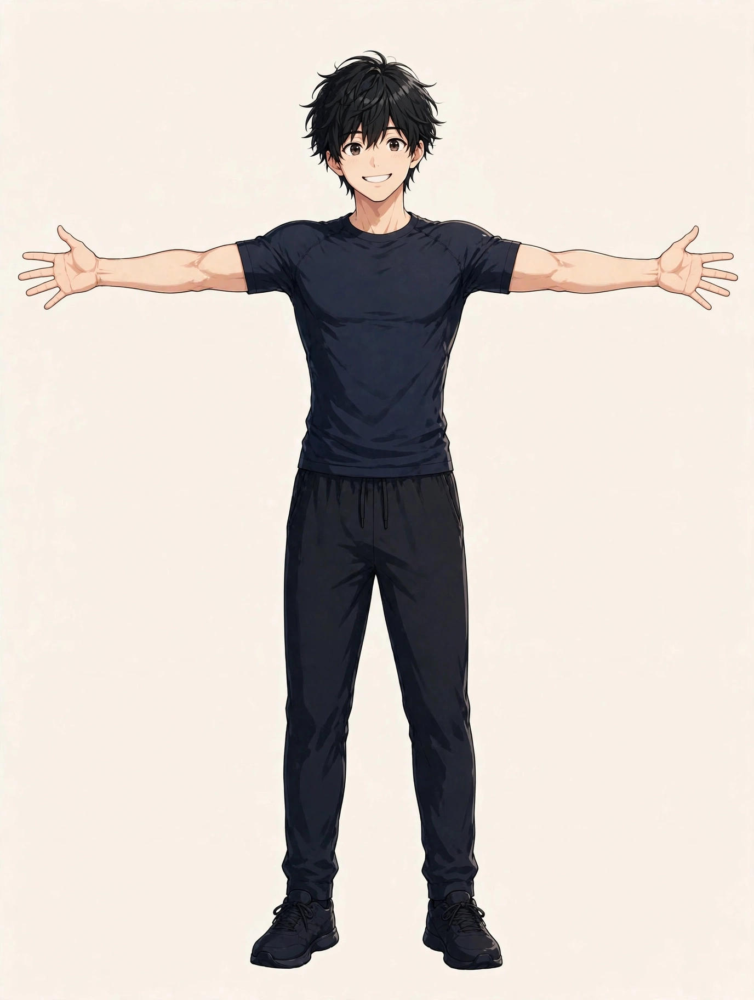

SYMPTOM GUIDE ｜ 東三国・新大阪
巻き肩でお悩みの方へ東三国・新大阪の男性専用整体院 北辰堂

肩が内側に巻き込んで、胸が縮こまった姿勢になっている。写真で自分の姿勢を見て気づく方も多い「巻き肩」は、見た目だけでなく呼吸の浅さとも関係します。
このページでは、小胸筋・前鋸筋の仕組みと、胸の縮こまりが続く要因を整理し、東洋医学の考え方とツボ、セルフケア、受診の目安をまとめました。一般的な健康情報としてご覧ください。
① 巻き肩とは
巻き肩は、肩関節が内側へ回り込み（内旋）、肩の位置が体の前側へ寄った姿勢の状態を指します。横から見ると、肩先が耳より前に出て、胸が閉じたように見えるのが特徴です。猫背とセットで現れることが多く、デスクワーク姿勢の代表的な崩れ方の一つです。
関係する筋肉は、胸の前側の小胸筋と大胸筋、そして肩甲骨を肋骨側へ引きつける前鋸筋です。小胸筋が縮こまった状態が続くと、肩甲骨が前へ傾き、肩が巻き込む位置で固定されやすくなります。逆に、肩甲骨を正しい位置に保つ筋肉（僧帽筋の下部や菱形筋）は働きにくくなります。
巻き肩の姿勢が続くと、胸郭の広がりが制限され、呼吸が浅くなりやすいとされます。また、肩の前面への負担が増え、肩の痛みや腕のだるさと関係する場合もあります。姿勢の状態は見た目だけでなく、体の使い方の問題として捉えることが大切です。
小胸筋は大胸筋の奥にある小さな筋肉で、縮こまると肩甲骨を前へ傾けます。前鋸筋は脇の下から肋骨に広がり、肩甲骨を安定させる筋肉です。位置は目安として示しています。
② 要因の整理
巻き肩は、日常の姿勢の積み重ねで作られる側面が大きい状態です。代表的な要因を整理します。
- 小胸筋の縮こまり：胸の前側の筋肉が短い状態で固まると、肩甲骨が前へ引かれ続けます。うつむき・前かがみの姿勢が多い生活では、この筋肉が伸びる機会が不足します。
- 肩甲骨を保つ筋肉の働きの低下：僧帽筋の下部や菱形筋など、肩甲骨を引き寄せる筋肉が働きにくいと、胸側の筋肉の引く力に対抗できません。姿勢の崩れは、筋肉のバランスの問題として現れます。
- デスクワークの前かがみ姿勢：キーボードやスマートフォンを体の前で操作する姿勢は、肩を内側へ巻き込む形そのものです。1日の大半をこの姿勢で過ごすことが、最大の要因といえます。
- 呼吸の浅さとの悪循環：胸が縮こまると呼吸が浅くなり、呼吸の補助に首・肩の筋肉が使われるようになります。すると首・肩の緊張が増し、さらに姿勢が固まる、という循環が起こりやすくなります。
- トレーニングの偏り：胸の種目（ベンチプレスなど）ばかりが多く、背中や肩甲骨まわりの種目が少ないと、前側の筋肉の引く力が相対的に強くなります。筋トレをしている方にも見られる要因です。
- 鞄の持ち方・腕の使い方：重い物を体の前で抱える作業や、片側の肩掛けが続くことも、肩の位置を前へ偏らせる要因になります。日常の小さな偏りの蓄積です。
③ セルフチェックリスト
巻き肩の傾向を振り返るためのチェックです。壁を使った簡単な確認方法も含んでいます。
- 横から見ると肩先が耳より前に出ている
- 壁に背をつけると肩の前側が浮く・当たらない
- 胸を張ろうとすると腰が反ってしまう
- 呼吸が浅く、ため息が多い
- 肩の前面が張りやすい
- デスクワーク中、肩が内側に入っている自覚がある
- ベンチプレスなど胸の種目が中心のトレーニングをしている
- 写真で自分の姿勢を見ると猫背に見える
このチェックは姿勢の状態を判断するためのものではなく、傾向に気づくための目安です。腕のしびれや肩の痛みを伴う場合は、姿勢の問題として片づけず、関連ページや⑧の受診の目安も確認してください。
④ 東洋医学から見た考え方とツボ
東洋医学では、胸の前面は手の太陰肺経や足の陽明胃経が巡る領域とされ、胸の縮こまりは「気の巡りの滞り」と結びつけて考えます。呼吸の浅さは、気を取り込む働きの低下として捉えられ、胸を開くことは巡りを整える基本とされます。
ツボの面では、鎖骨下の中府、胸の中央の膻中、喉の下の天突が代表的です。いずれも胸郭まわりの巡りと呼吸に関係づけて考えられるツボです。
天突は喉の下のくぼみ、中府は鎖骨の下の外側、膻中は胸の中央にあります。位置は目安です。胸まわりはやさしい圧で行ってください。
ツボ：中府（ちゅうふ）
位置：鎖骨の下縁の外側、胸の前面にあるくぼみです。小胸筋の近くに位置します。
押し方：指の腹でくぼみを軽く押さえ、小さな円を描くようにやさしく刺激します。深呼吸と組み合わせ、胸の開きを感じながら行うのがおすすめです。
ツボ：膻中（だんちゅう）
位置：胸の中央、左右の乳頭を結んだ線の真ん中あたり、胸骨の上にあります。
押し方：手のひらの付け根を当て、軽く圧を加えながらゆっくり呼吸します。胸の力が抜ける感覚を意識し、強く押さないでください。
ツボ：天突（てんとつ）
位置：喉の下、左右の鎖骨の間にあるくぼみです。
押し方：指の腹を軽く当てるだけに留め、深く押し込まないでください。呼吸の通り道に近いデリケートな場所のため、温めるケアで代用しても構いません。
⑤ 整体・リラクゼーションでの施術の考え方
北辰堂の施術では、巻き肩に対して、胸の前側の縮こまり（小胸筋まわり）をゆるめることと、肩甲骨の位置を整えることを組み合わせて進めます。姿勢は筋肉のバランスの問題であるため、硬い部位を伸ばすだけでなく、働きにくい部位の確認も大切にします。
施術だけで姿勢が定着するわけではないため、日常の座り方や、胸を開くセルフケアの習慣化もあわせてお伝えします。写真や鏡での確認を挟むと、変化に気づきやすくなります。
施術は整体とリラクゼーションの範囲で行い、姿勢の改善をお約束するものではありません。肩の痛みや腕のしびれを伴う場合は、関連する状態の確認も含めてご案内します。
⑥ セルフケア
胸を開き、肩甲骨の位置を整えるケアを紹介します。腰を反らしすぎないこと、痛みの出る動きは中止することが前提です。

両腕を横に開き、胸の前側を伸ばします。①背筋を伸ばして立つ・座る ②両腕を肩の高さで横に開く ③胸の前側の伸びを感じながら15秒ほど保つ、が基本の流れです。
セルフケア1：胸を開くストレッチ
両腕を肩の高さで横に開き、胸の前側をゆっくり伸ばします。15秒ほど保って数回。縮こまった小胸筋まわりを伸ばす基本のケアです。腰を反らすのではなく、胸郭を開く意識で行ってください。
セルフケア2：壁を使った胸のストレッチ
壁際や柱の横に立ち、肘を肩の高さで壁につけて体を反対側へ小さく向けます。胸の前側の伸びを感じたら15秒ほど保ち、左右行います。伸びが強い方は、肘の位置を少し下げて調整してください。
セルフケア3：肩甲骨寄せと下げ
肩甲骨を背中の中心へ寄せ、次に下へ下げる動きを組み合わせます。5秒保って力を抜く、を5回ほど。肩甲骨を正しい位置に保つ筋肉を使う運動です。
セルフケア4：深呼吸で胸郭を広げる
鼻からゆっくり吸い、胸の横方向（肋骨の脇）が広がる感覚を意識します。手を肋骨の脇に当てると動きを確認しやすくなります。浅くなった呼吸を整えることは、姿勢のケアと表裏一体です。
⑦ 場面別の注意
- デスクワーク中：キーボード操作は肩を巻き込む姿勢そのものです。1時間に一度、胸を開くストレッチを挟み、モニターとの距離で前かがみが強くなっていないか確認してください。
- スマートフォン使用時：画面を低い位置で見ると、頭も肩も前に出ます。画面を目の高さに近づけ、肘で支える工夫をしてください。
- トレーニング時：胸の種目に偏らず、背中（ローイングなど）と肩甲骨まわりの種目を組み合わせます。フォームの確認時に、肩の巻き込みが出ていないかもチェックしてください。
- 就寝時：丸まった姿勢で寝続けると、胸の縮こまりが固定されやすくなります。仰向けで腕の置き場所を工夫し、胸が開く寝姿勢を意識してください。
⑧ 受診の目安
- 腕や手のしびれが続いている
- 肩の痛みが数週間続いても軽くならない
- 息苦しさや胸の痛みを伴う
- 肩が上がらなくなってきた
- 姿勢の崩れに加え、歩行の不安定さがある
- 左右の肩の高さの差が急に大きくなった
巻き肩の背景には、胸郭出口症候群のように神経や血管が関係する状態が隠れている場合があります。しびれや息苦しさを伴う場合は、姿勢のケアの前に医療機関での確認をご検討ください。
⑨ よくある質問
Q. 巻き肩と猫背はどう違うのですか？
猫背は背中（胸椎）の丸まりが中心、巻き肩は肩関節の内側への巻き込みが中心です。実際は両方が重なっていることが多いため、このページと「猫背」のページをあわせてご覧いただくと、全体像がつかみやすくなります。
Q. 巻き肩は筋トレで直りますか？
背中や肩甲骨まわりの筋肉を鍛えることは、バランスを整える助けになります。ただし、胸側の縮こまりを伸ばすケアと、日常姿勢の見直しを組み合わせることが大切です。当院では、体の状態に合わせた進め方をお伝えします。
Q. 姿勢矯正ベルトのような道具は有効ですか？
道具で姿勢を保つことは一時的な補助にはなりますが、筋肉の使い方そのものは変わりません。頼りすぎず、セルフケアと併用する位置づけが現実的です。具体的な製品の推奨は当院では行っていません。
Q. 呼吸が浅いことと巻き肩は関係しますか？
胸が縮こまった姿勢では胸郭の広がりが制限され、呼吸が浅くなりやすいとされます。胸を開くケアと深呼吸を組み合わせることで、姿勢と呼吸の両面から整えていく考え方です。
北辰堂のご案内
北辰堂は、大阪市淀川区東三国二丁目にある整体院です。男性スタッフ1人で運営しているため、男性専用としています。施術歴30年の平賀伸人（鍼灸師・国家資格）が、整体とリラクゼーションを行います。当院では鍼灸施術は行いません。営業は平日・土曜17:00〜22:00、日曜10:00〜22:00の完全予約制です。料金は60分 初回2,000円／2回目以降6,000円、90分 初回3,000円／2回目以降9,000円で、お支払いは現金のみです。プライバシーへの配慮のため、詳しい住所はご予約確定後にLINEでご案内します。
メニュー・料金は料金・メニューページ、施術者については当院についてをご覧ください。
関連するお悩み
ご予約・ご相談はLINEから
東三国・新大阪・淀川区周辺で、巻き肩や姿勢の崩れ、首・肩の緊張について相談先をお探しの方は、LINE公式アカウント（北辰堂）からお気軽にご連絡ください。現在の状態をお聞きしたうえで、施術の進め方をご案内します。
LINEで予約する